约 1413 个字 11 张图片 预计阅读时间 7 分钟
Chap 10 | Query Optimization
章节启示录
摆烂了……
后面有一部分是打星号的，于是就没写笔记了，不知道会不会考。
1.Introduction¶
- 评估给定查询的替代方法
- 等效表达式
- 每个操作的不同算法 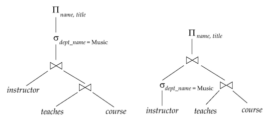
2.Transformation of Relational Expressions¶
2.1 Equivalence Rules¶
-
selection
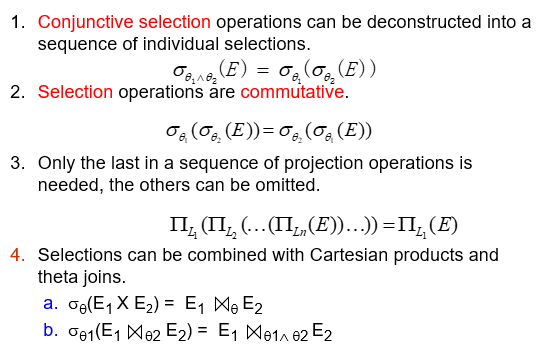
- 算子可拆分
如果某些属性有索引，那么可以先拆分，在索引 select 之后再执行其他算子，否则不如不拆分。 - 算子可交换
先执行有索引的算子。 - 投影的属性可以只保留最后一次的
- 选择算子可以和合并结合
- 算子可拆分
-
join
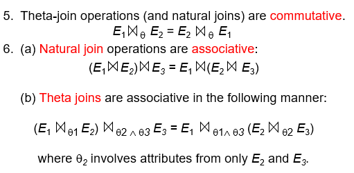
- 算子可交换
- 自然连接可结合
先连接中间结果小的
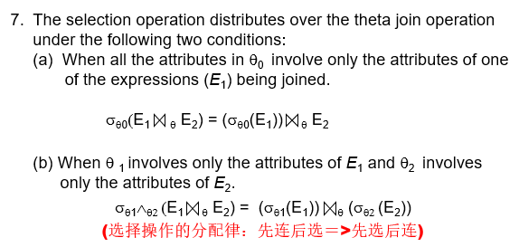
- 如果选择算子只和一个关系有关，那么我们可以先执行选择。（选择算子要早进行，推到叶子上）
-
projection
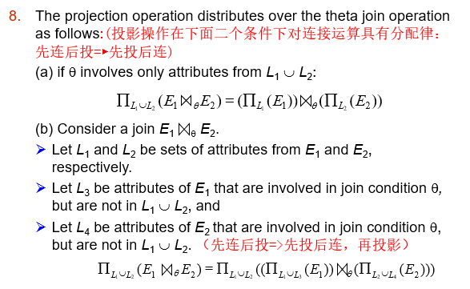
- 先投影后连接
-
set operation
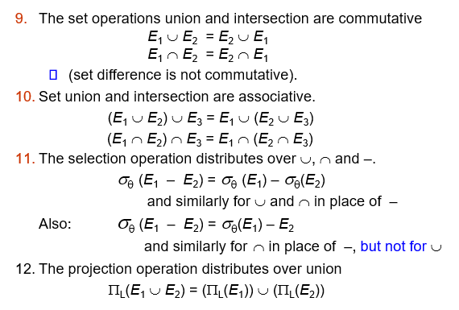
- 几个交换律
- 减法中第二个关系不用做选择（多减没关系）
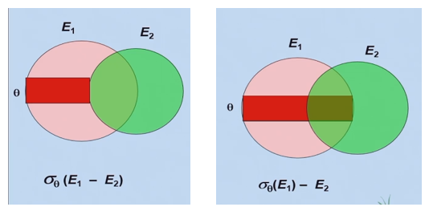
2.2 Enumeration of Equivalent Expressions(等效表达式的枚举)¶
查询优化器使用等效规则系统地生成与给定表达式等效的表达式。
可以通过以下方法生成所有等效表达式：
- repeat（重复）
- 对已经找到的每个等价表达式的每个子表达式应用等价规则
- 将新生成的表达式添加到等效表达式集中
- 直到上面没有生成新的等效表达式
上述方法在空间和时间上都非常昂贵。
另外两种方法：
- 基于转换规则的优化计划生成
- 仅包含选择、投影和联接的查询的特殊情况方法
一些优化：
-
通过共享公共子表达式减少空间需求：
当 E1 通过等价规则从 E2 生成时，两者通常只有顶层不同，下面的子树相同，可以使用指针共享。例如，当应用连接交换性时
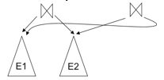同一子表达式可能会多次生成,检测重复的子表达式并共享一个副本。
-
通过不生成所有表达式来减少时间要求:
动态规划：我们将只研究用于连接顺序优化的动态规划的特殊情况
3.Statistics for Cost Estimation¶
前置定义
- \(n_r\)：关系 \(r\) 中的元组数。
- \(b_r\)：包含 \(r\) 元组的块数。
- \(l_r\)：\(r\) 元组的大小。
- \(f_r\)：\(r\) 的 blocking factor — 即一个块中 \(R\) 的元组数。
- 如果 \(r\) 的元组在物理上一起存储在一个文件中，则：\(\Large b_r=\lceil \frac{n_r}{f_r} \rceil\)
- \(V(A， r)\)：属性 \(A\) 出现在 \(r\) 中的非重复值的数量; 与 \(\prod_A(r)\) 的大小相同。
- \(SC(A， r)\)：关系 \(r\) 的属性 \(A\) 的选择基数;满足 \(A\) 相等性的平均记录数。
3.1 Selection Size Estimation¶
-
\(\sigma_A=v(r)\)
- \(n_r / V(A， r)\)：满足选择的记录数
- 键属性的相等条件：size estimate = 1
-
\(\sigma_{A≤V}(r)\)（ \(\sigma_{A≥V}(r)\) 的情况是对称的）
设 c 表示满足条件的元组的估计数。
如果 catalog 中有 \(min(A， r)\) 和 \(max(A， r)\) 可用- \(c = 0\) 如果 \(v < min(A， r)\)
- \(\large c = n_r*\frac{v-min(A,r)}{max(A,r)-min(A,r)}\)
如果直方图可用，可以细化高于估计值
在没有统计信息的情况下，假设 \(c\) 为 \(n_r / 2\)。
-
Size Estimation of Complex Selections:
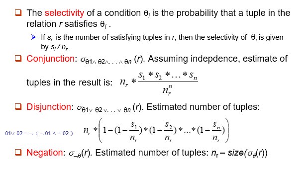
3.2 Estimation of the Size of Joins¶
笛卡尔积 \(\large r × s\) 包含 \(\large n_r * n_s\) 个元组;每个元组占用 \(\large s_r + s_s\) 字节。
- 如果 \(R \cap S = \varnothing\)，则 \(\large r \bowtie s\) 等价于 \(\large r × s\) 相同。
- 如果 \(R \cap S\) 是 \(R\) 的键，则 \(s\) 的元组最多会与 \(r\) 中的一个元组连接。
因此，\(r \bowtie s\) 中的元组数不大于 \(s\) 中的元组数。 -
如果 \(S\) 中的 \(R \cap S\) 是 \(S\) 中引用 \(R\) 的外键，则 \(\large r \bowtie s\) 中的元组数与 \(\large s\) 中的元组数完全相同。
引用 \(S\) 的外键的情况是对称的。在学生执行的示例查询中(\(student \bowtie takes\))，\(ID\) in \(take\) is a foreign key referencing \(student\)。因此，结果正好有 \(n_{takes}\) 元组，即 10000
-
如果 \(R \cap S = \{A\}\) 不是 \(R\) 或 \(S\) 的键。
- 如果我们假设 \(R\) 中的每个元组 \(t\) 在 \(R\bowtie S\) 中产生元组，则 \(R\bowtie S\) 中的元组数估计为： $$ \frac{n_r*n_s}{V(A,s)} $$
-
如果反之亦然，则获得的估计值为：
$$ \frac{n_r*n_s}{V(A,r)} $$ 这两个估计中较低的可能更准确。
e.g:
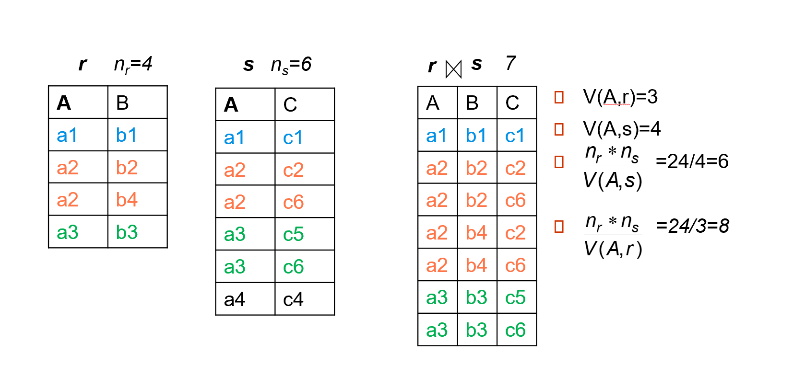
3.3 Size Estimation for Other Operations¶
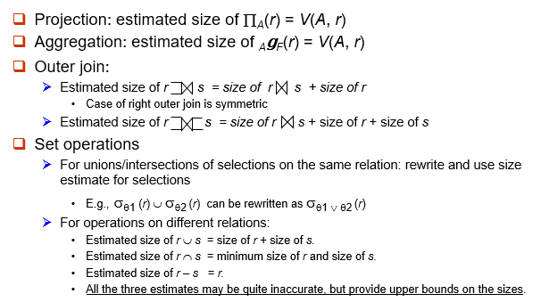
3.4 Estimation of Number of Distinct Values¶
Selections: \(\large \sigma_\theta(r)\)¶
-
如果 \(\theta\) 强制 \(A\) 取指定值：\((A，\sigma_{\theta} (r)) = 1\)。
e.g. A = 3
-
如果 \(\theta\) 强制 \(A\) 采用一组指定的值之一：$V(A，\sigma_{\theta} (r)) = $ 指定值的数量。
e.g. \((A = 1 \vee A = 3 \vee A = 4 )\)
-
如果选择条件 \(\theta\) 的形式为 \(A\;\;op\;\; r\)
估计 \(\large V(A, \sigma_\theta (r)) = V(A,r) * s\)
其中 s 是选择率。 -
在所有其他情况下：使用 \(\large min(V(A，r)， n_{\sigma\theta (r)})\) 作为估计
使用概率论可以得到更准确的估计，但这些基本可以正常工作。
Joins: \(\large r \bowtie s\)¶
- 如果 \(A\) 中的所有属性都来自 \(r\)
估计 \(V(A, r\bowtie s) = min (V(A, r), n_{r \bowtie s})\) - 如果 \(A\) 包含来自 \(r\) 的属性 \(A1\) 和来自 \(s\) 的 \(A2\)，则估计 \(\large V(A, r\bowtie s) = min(V(A1, r)*V(A2 – A1, s),V(A1 – A2， r)*V(A2， s), n_{r\bowtie s})\)
使用概率论可以得到更准确的估计，但这些基本可以正常工作。
3.5 Choice of Evaluation Plans¶
在选择评估计划时，必须考虑评估技术的相互作用。为每个操作单独选择最便宜的算法可能不会产生最佳的整体算法。
例如，
1. 合并-联接可能比哈希联接成本更高，但可以提供排序输出，从而降低外部级聚合的成本。
2. 嵌套循环联接可能为流水线提供机会。
实用的查询优化器包含以下两种广泛方法的元素：
- 搜索所有计划并以基于成本的方式选择最佳计划。
- 使用启发式方法来选择计划。
复习时的一些补充
- Performing the projection as early as possible reduces the size of the relation to be joined.
- 如果 \(R \cap S\) 是 \(R\) 的键，则 \(s\) 的元组最多会与 \(r\) 中的一个元组连接。因此，\(r \bowtie s\) 中的元组数不大于 \(s\) 中的元组数。
- Equality condition on a key attribute: size estimate = 1